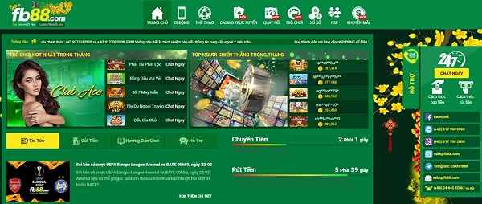
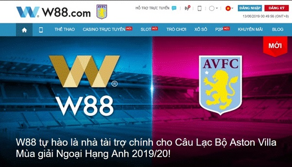
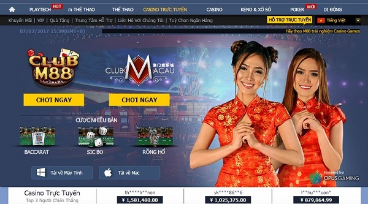
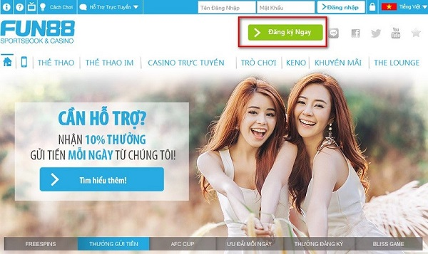
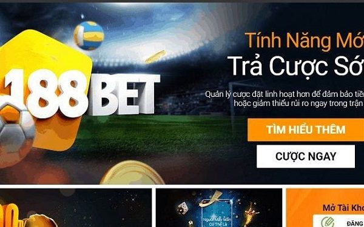
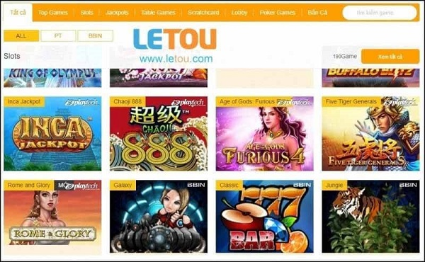
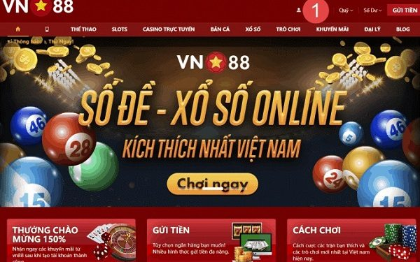

Xã hội ngày càng phát triển và nhu cầu giải trí của con người ngày càng tăng cao. Nắm bắt được điều đó các nhà cái lần lượt ra đời và phát triển mạnh mẽ. Người chơi có rất nhiều sự lựa chọn để giải trí sau những giờ làm việc căng thẳng và mang những phần thưởng may mắn cho bản thân. Bài viết sau đây GameNoob sẽ giới thiệu đến bạn top 10 nhà cái uy tín nhất tại Việt Nam.
Nhà cái uy tín cần những yếu tố gì?
Đối với các nhà cái trực tuyến uy tín là điều để người chơi lựa chọn tham gia. Yếu tố đầu tiên và quan trọng nhất phải xét đến độ bảo mật và an toàn của nhà cái. Thông tin người chơi phải được đảm bảo và không tiết lộ với bất kỳ cá nhân hay tổ chức nào.
Nhà cái đa dạng hóa được dịch vụ để người chơi có thể dễ dàng lựa chọn các dịch vụ phù hợp với nhu cầu của bản thân. Đi kèm với đó là chất lượng của mỗi dịch vụ được đưa ra. Chăm sóc khách hàng thường xuyên và giải quyết những vấn đề cho khách.
Top 10 nhà cái uy tín nhất
Bất kỳ người chơi nào khi lựa chọn nhà cái cũng sẽ tìm hiểu kỹ càng các thông tin như: thuộc quản lý của tổ chức nào, nhà cái được cấp phép hoạt động hay chưa, nhà cái có từng dính phốt lừa đảo hay không. Điều này ảnh hưởng trực tiếp đến mức độ uy tín của nhà cái.
Bất kỳ người chơi nào khi lựa chọn nhà cái cũng sẽ tìm hiểu kỹ càng các thông tin như: thuộc quản lý của tổ chức nào, nhà cái được cấp phép hoạt động hay chưa, nhà cái có từng dính phốt lừa đảo hay không. Điều này ảnh hưởng trực tiếp đến mức độ uy tín của nhà cái.
# 12 nhà cái uy tín nhất Thế Giới và Việt Nam
Chúng tôi sẽ liệt kê danh sách TOP 10 nhà cái cá cược uy tín nhất hiện nay:
Nhà cái 123B
123B là một trong những nhà cái uy tín hàng đầu Châu Á. Trong các bảng xếp hạng nhà cái luôn luôn nằm trong top đầu. Vậy điều gì giúp cho nhà cái này giữ vững vị trí của mình.
Dù cá cược bóng đá vẫn là dịch vụ mũi nhọn của 123B thế nhưng, việc đầu tư, chăm chút của nhà cái 123B đối với tất cả các dịch vụ là như nhau. Điều này mang lại cho người chơi tâm lý thoải mái nhất. Cùng điểm qua một số ưu và nhược điểm của nhà cái này:
Về ưu điểm khi chơi tại nhà cái 123B:
. Được cấp phép bởi Chính phủ Philippines nên độ an toàn, bảo mật cao.
. 123B trực tiếp bóng đá cung cấp đa dạng các loại hình game cá cược giải trí.
. Giao diện thân thiện, chuyên nghiệp.
. Thời gian nạp/rút tiền nhanh chóng và tiết kiệm thời gian.
. Có thể sử dụng cả trên nền tảng di động và website.
. Luôn cập nhật các chương trình khuyến mãi hấp dẫn, mang đến cho khách hàng trải nghiệm hoàn hảo nhất.
. Đội ngũ nhân viên tư vấn, chăm sóc khách hàng phục vụ 24/224.
. Độ bảo mật cao, đảm bảo các thông tin của người chơi được giữ bí mật tuyệt đối..
Nhà cái EE88
. Tuy chỉ mới xuất hiện ở thị trường Việt Nam nhưng EE88 đang dần trở thành nhà cái uy tín hàng đầu. Nắm bắt rõ được nhu cầu của người chơi và đưa ra những chiến lược thích hợp.
Các ưu điểm của nhà cái EE88 thu hút người chơi:
. Các dịch vụ vô cùng đa dạng và hấp dẫn người chơi. Bạn có thể tham gia các hình thức như thể thao, đánh bài, slot game và thế mạnh lớn là xổ số với tỷ lệ cược 1 ăn 95
. Thời gian gửi và rút tiền diễn ra nhanh chóng. Nhà cái liên kết với hầu hết các ngân hàng lớn trên cả nước.
. Ưu đãi lớn để chào mừng các thành viên mới lên đến 100% cho lần nạp đầu tiên.
Thiết kế giao diện dễ dạng sử dụng trên nhiều hệ điều hành khác nhau như android hoặc IOS.
. Hỗ trợ nhiều ngôn ngữ khác nhau nên nhiều người trên các quốc gia đều có thể sử dụng được.
Đội ngũ nhân viên chăm sóc khách hàng được đào tạo chuyên nghiệp và luôn hỗ trợ khách ngay cả lễ tết.
. Tốc độ mã hóa thông tin cao nên khả năng bảo mật vô cùng an toàn.
. Thời gian gửi và rút tiền diễn ra nhanh chóng.
. Sản phẩm cá cược đa dạng như: thể thao, casino, Slot, xổ số, bắn cá, và đặc biệt là bầu cua, bài tiến lê.. Điều này đem lại nhiều sự lựa chọn cho người chơi.
. Website cực thân thiện với các thiết bị di động và có ứng dụng cho hệ điều hành Android và IOS.
. Hỗ trợ trực tuyến 24/7. Nhà cái EE88 còn hỗ trợ phương thức phổ biến ở Việt Nam như Momo, Zalo Pay, Viettel Pay, VTC Pay…
. Các chương trình khuyến mãi khủng thường xuyên được cập nhật trên website của nhà cái.
Nhà cái FB88
Thuộc top nhà cái mới xuất hiện trên thị trường nhưng Fb88 đã và đang khẳng định mình khi luôn nằm trong top nhà cái uy tín nhất. Vậy nhà cái mà mình đang đề cập có những ưu điểm gì?
Nhà cái Fb88 được cấp phép hoạt động bopwir chính phủ Philippine. Để có được giấy phép này yêu cầu nhà cái phải hoạt động theo đúng pháp luật.
Sử dụng hệ thống mã hóa sever khủng nên độ an toàn và bảo mật thông tin cao.
Dịch vụ giải trí vô cùng đa dạng như: bóng đá, casino hoặc slot game…
Các khuyến mãi lớn chào mừng thành viên mới và phần thưởng lớn khi dành chiến thắng.
Gửi và rút tiền nhanh chóng chỉ trong vài phút.
Đội ngũ tư vấn và hỗ trợ khách hàng hoạt động 24/24.
Giao diện cực kỳ thân thiện và dễ sử dụng.

Nhà cái FB88 có giao diện thân thiện và dễ dàng sử dụng.
LINK ĐĂNG KÝ FB88 MỚI NHẤT
Nhà cái W88
Nhà cái W88 là một trong những nhà cái được đánh giá uy tín hàng đầu tại thị trường các cược Việt Nam. Để được lọt vào top này nhà cái có những ưu điểm sau:
Đa dạng các dịch vụ nhưng đặc biệt thế mạnh là bóng đá và game casino online. Đây là 2 dịch vụ có rất nhiều người chơi biết đến và tham gia.
Dịch vụ nạp và rút tiền diễn ra nhanh chóng. Người chơi sẽ không phải lo lắng khi vì quá trình này chỉ diễn ra khoảng thời gian rất ngắn từ 5-30 phút.
Nhà cái được chính phủ Philippine cấp phép hoạt động. Để có được giấy phép này nhà cái cần hoạt động theo đúng quy định của pháp luật.
Hệ thống chăm sóc khách hàng chuyên nghiệp và tận tình.
Giao diện hỗ trợ hầu hết các hệ điều hành và quá trình đăng ký diễn ra vô cùng nhanh gọn.

Nhà cái M88
. M88 là một trong những nhà cái uy tín hàng đầu khu vực Châu Á. Trong các bảng xếp hạng nhà cái luôn luôn nằm trong top 10. Vậy điều gì giúp cho nhà cái này giữ vững vị trí của mình.
. Điểm mạnh của nhà cái M88 đó là cá cược về bóng đá. Đa số các giải đấu lớn trên thế giới đều được nhà cái cập nhật liên tục tới người chơi. Không những vậy, các dịch vụ khác cũng luôn được chú trọng như: bắn cá, đánh bài casino, slot game…
. Người chơi dễ dàng nạp và gửi tiền nhanh chóng. Nếu gặp phải bất kỳ vấn đề gì nhà cái luôn hỗ trợ giải quyết.
. Nhà cái được cấp phép hoạt động bởi chính phủ Philippine.
. Các chương trình khuyến mãi diễn ra thường xuyên là liên tục. Mức thưởng có thể lên đến 9 triệu cho lần nạp đầu tiên. Các ưu đãi cho thành viên được cập nhật trên trang chủ để người chơi biết tới.
. Hỗ trợ khách hàng theo tổng đài trực tuyến hoặc trả lời qua email.
. Thiết kế website dễ dàng sử dụng ngay cả những người mới chơi lần đầu.

Nhà cái 188BET
. M88 là một trong những nhà cái uy tín hàng đầu khu vực Châu Á. Trong các bảng xếp hạng nhà cái luôn luôn nằm trong top 10. Vậy điều gì giúp cho nhà cái này giữ vững vị trí của mình.
. Điểm mạnh của nhà cái M88 đó là cá cược về bóng đá. Đa số các giải đấu lớn trên thế giới đều được nhà cái cập nhật liên tục tới người chơi. Không những vậy, các dịch vụ khác cũng luôn được chú trọng như: bắn cá, đánh bài casino, slot game…
. Người chơi dễ dàng nạp và gửi tiền nhanh chóng. Nếu gặp phải bất kỳ vấn đề gì nhà cái luôn hỗ trợ giải quyết.
. Nhà cái được cấp phép hoạt động bởi chính phủ Philippine.
. Các chương trình khuyến mãi diễn ra thường xuyên là liên tục. Mức thưởng có thể lên đến 9 triệu cho lần nạp đầu tiên. Các ưu đãi cho thành viên được cập nhật trên trang chủ để người chơi biết tới.
. Hỗ trợ khách hàng theo tổng đài trực tuyến hoặc trả lời qua email.
. Thiết kế website dễ dàng sử dụng ngay cả những người mới chơi lần đầu.

Nhà cái Fun88 có các dịch vụ vô cùng đa dạng và hấp dẫn người chơi
Nhà cái 188Bet
Một số ưu điểm của nhà cái 188Bet:
. Các dịch vụ cá cược luôn luôn đa dạng như: cá cược thể thao( bóng đá, bóng rổ, đua ngựa, bơi lội…), casino trực tuyến hoặc slot game…
. Được cấp giấy phép hoạt động từ hiệp hội giám sát nhà cái IOM.
. Dịch vụ gửi và rút tiền nhanh chóng. Khách hàng chỉ mất khoảng vài phút để thực hiện giao dịch.
. Liên tục có các khuyến mãi khủng chào đón người chơi mới và các thành viên của nhà cái.
. Giao diện thân thiện và dễ dàng sử dụng. Nhà cái hỗ trợ người chơi với nhiều ngôn ngữ khác nhau.

Nhà cái Fun88 có các dịch vụ vô cùng đa dạng và hấp dẫn người chơi
Nhà cái 188Bet
Một số ưu điểm của nhà cái 188Bet:
. Các dịch vụ cá cược luôn luôn đa dạng như: cá cược thể thao( bóng đá, bóng rổ, đua ngựa, bơi lội…), casino trực tuyến hoặc slot game…
. Được cấp giấy phép hoạt động từ hiệp hội giám sát nhà cái IOM.
. Dịch vụ gửi và rút tiền nhanh chóng. Khách hàng chỉ mất khoảng vài phút để thực hiện giao dịch.
. Liên tục có các khuyến mãi khủng chào đón người chơi mới và các thành viên của nhà cái.
. Giao diện thân thiện và dễ dàng sử dụng. Nhà cái hỗ trợ người chơi với nhiều ngôn ngữ khác nhau.

Nhà cái Fun88 có các dịch vụ vô cùng đa dạng và hấp dẫn người chơi
Nhà cái 188Bet
Một số ưu điểm của nhà cái 188Bet:
. Các dịch vụ cá cược luôn luôn đa dạng như: cá cược thể thao( bóng đá, bóng rổ, đua ngựa, bơi lội…), casino trực tuyến hoặc slot game…
. Được cấp giấy phép hoạt động từ hiệp hội giám sát nhà cái IOM.
. Dịch vụ gửi và rút tiền nhanh chóng. Khách hàng chỉ mất khoảng vài phút để thực hiện giao dịch.
. Liên tục có các khuyến mãi khủng chào đón người chơi mới và các thành viên của nhà cái.
. Giao diện thân thiện và dễ dàng sử dụng. Nhà cái hỗ trợ người chơi với nhiều ngôn ngữ khác nhau.

Nhà cái Fun88 có các dịch vụ vô cùng đa dạng và hấp dẫn người chơi
Nhà cái 188Bet
Một số ưu điểm của nhà cái 188Bet:
. Các dịch vụ cá cược luôn luôn đa dạng như: cá cược thể thao( bóng đá, bóng rổ, đua ngựa, bơi lội…), casino trực tuyến hoặc slot game…
. Được cấp giấy phép hoạt động từ hiệp hội giám sát nhà cái IOM.
. Dịch vụ gửi và rút tiền nhanh chóng. Khách hàng chỉ mất khoảng vài phút để thực hiện giao dịch.
. Liên tục có các khuyến mãi khủng chào đón người chơi mới và các thành viên của nhà cái.
. Giao diện thân thiện và dễ dàng sử dụng. Nhà cái hỗ trợ người chơi với nhiều ngôn ngữ khác nhau.

Nhà cái Fun88 có các dịch vụ vô cùng đa dạng và hấp dẫn người chơi
Bài viết trên chúng tôi đã giới thiệu đến bạn top 10 nhà cái uy tín nhất tại Việt Nam. Hy vọng với những thông tin trên sẽ giúp ích cho bạn lựa chọn được nhà cái phù hợp. Chúc bạn có những giây phút giải trí tại các nhà cái thật thoải mái và thú vị. Cảm ơn đã tham khảo bài viết của chúng tôi.
Lode 88 – Link vào Lode88 cực đơn giản và đầy đủ nhất
Bong99 – Link vào bong99 mới nhất và đầy đủ cho dân mê cờ bạc
W88 – Link vào W88 mới nhất và nhanh nhất 2020
12bet – Link vào 12bet mới nhất không bị chặn
388bet – Link vào 388bet cực an toàn, chi tiết và đầy đủ nhất JULY 21, 2020
388bet – Link vào 388bet cực an toàn, chi tiết và đầy đủ nhất JULY 21, 2020
Nhóm Kéo Xóc Đĩa Kiếm 2 Triệu Mỗi Ngày!
VÀO NHÓM KÉO XÓC ĐĨA NGAY
Giới Thiệu
Gamenoob cập nhật liên tục về game đổi thưởng, game online, webgame, game mobile, pc/console, gift code, nhà cái uy tín. Hợp tác: gamenoobnet68@gmail.com Telegram: @phattai6789
Đối Tác
Bản Quyền Thuộc Về GameNoob

Theo dõi GameNoob trên Google News
Tìm Kiếm Nhiều